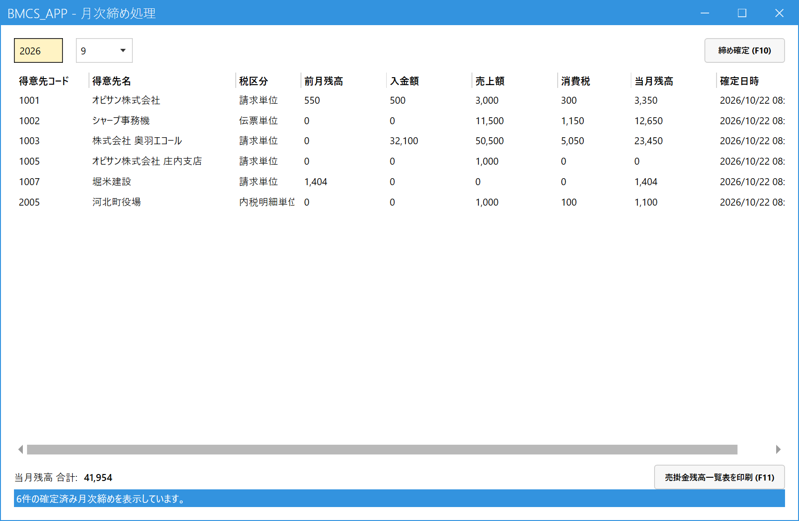

月次締めをする（月末の売掛残高を確定する）
こんなときに使います
月が終わったときに、全得意先の月末の売掛残高を確定します。確定した月の売上・入金は訂正・取消も新規登録もできなくなります。
確定後は、売掛金残高一覧表を印刷できます。
月が終わったときに、全得意先の月末の売掛残高を確定します。確定した月の売上・入金は訂正・取消も新規登録もできなくなります。
確定後は、売掛金残高一覧表を印刷できます。
月次締めは全得意先をまとめて確定します（得意先を選んで締めることはできません）。その月の売上・入金がすべて登録され、得意先元帳で残高を確認してから実行してください。
1.画面を開く
メインメニューの「月次」（最初は折りたたまれているので、クリックして開きます）の中の「月次締め処理」をクリックします。開いた画面は、これまでに確定した月次締めの一覧です。

- 年（左の欄）：見たい年を4桁で入れます。
- 月（右の欄）：その年に締めた月から選びます。選んだ月の確定結果が下に出ます。
- 得意先ごとの確定結果：前月残高、入金額、売上額、消費税、当月残高です。
- 締め確定 (F10)：新しく月を締めるときに押します。
- 売掛金残高一覧表を印刷 (F11)：選んだ月の一覧を全件印刷します。
2.月を締める
- 締め確定 (F10) を押す。
- 「月次締め確定」の画面で、集計年月を選ぶ（初期値は前月。当月から過去24か月の中から選べます）。
- 締め実行を押し、確認メッセージで「はい」。
- 確定した月の一覧が表示されます。
- 前月・売上・入金・当月残高がすべてゼロの得意先は、締められません（一覧に出ません）。
- その月がすでに確定済みの得意先や、より後の月がすでに確定済みの得意先は、飛ばされます（理由が画面に出ます）。月は古い順に締めます。
3.確定後の動き
| 確定した月の… | できること |
|---|---|
| 売上・入金の新規登録 | できません（その得意先の、その月の日付では登録できず、エラーが出ます）。 |
| 既存の売上・入金の訂正・取消 | できません。 |
| 受注 | 制限なし（受注は月次締めの対象外）。 |
誤って締めたとき、締めた後に直したいことが出たときは、管理者が月次締め解除で解除します。解除すると、その月の伝票をすぐ直せます。直した後は、もう一度「月次締め処理」で締め直します（解除済みの結果は上書きされます）。